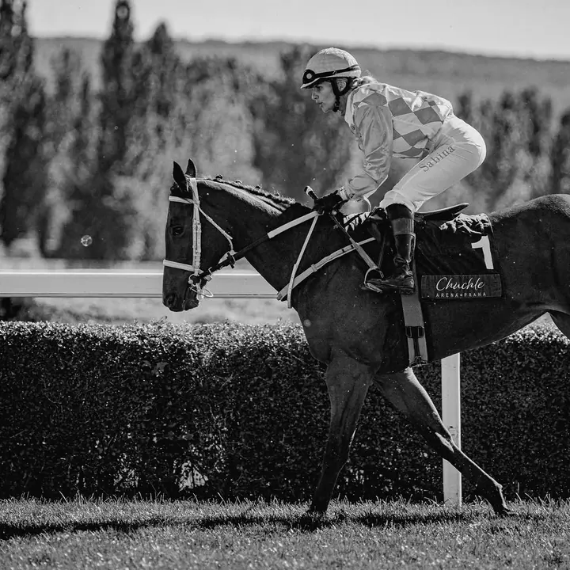
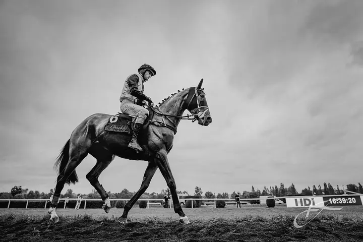

Portréty mazlíčků a koní
Psi, kočky i drobná zvěř elegantně v ateliéru nebo volně v přírodě. Za koňmi ráda přijedu na pastvinu, do stáje i na dostihy, parkur nebo drezuru.

Portrétní fotografka a fotoateliér
Jmenuji se Klára Stojaníková a ve svém ateliéru v pražských Nuslích fotím osobní i business portréty, digitálně i na film. Stejně ráda fotografuji mazlíčky a koně, v ateliéru i venku, kde jsou doma.
Zeptat se na termín
Psi, kočky i drobná zvěř elegantně v ateliéru nebo volně v přírodě. Za koňmi ráda přijedu na pastvinu, do stáje i na dostihy, parkur nebo drezuru.
Jsem portrétní fotografka a fotografování je mi profesí, způsobem sebevyjádření i zábavou. Můj ateliér najdete na Svatoslavově 20 v Praze Nuslích. Je to místo pro vaše digitální i analogové portréty, osobní i pracovní.
Nevěřím na to, že někdo je nebo není „fotogenický“. Všichni jsme jedineční a zasloužíme si to vidět. Focení u mě je proto klidné, nespěchané a vždy přizpůsobené vám. Stačí přijít tak, jak jste, o zbytek se postarám já. Výsledkem jsou moderní portréty v redakčním i vintage stylu, které budete chtít mít na zdi.
Mám ráda starou dobrou cestu film a papír. Tvořím kyanotypie, jak se dělaly v 19. století, i hybridní digitálně analogové obrazy a učím to i na kurzech a workshopech. Velkou kapitolou jsou pro mě zvířata, hlavně koně. Fotím je v ateliérovém světle, na pastvině i na dostihové dráze.
Osobně nebo online si povíme, co chcete zachytit a po jakých fotkách toužíte. U mazlíčků je konzultace před focením zdarma.
Dostanete ode mě tipy na oblečení a vizáž. Na přání zajistím i vizážistku, mazlíčkovi vezměte oblíbené pamlsky a hračky.
V ateliéru máme 1,5 až 2 hodiny v klidu a v soukromí, bez spěchu a ve vašem tempu. Zvířata fotím i venku podle dohody.
Do 7 dnů vám pošlu online galerii k výběru. Vybrané portréty vyretušuji a dodám digitálně i jako tisk na luxusním matném papíře.
Určitě. Představu fotogeničnosti odmítám, každý z nás je jedinečný. Focení je klidné a nespěchané, s pózováním vám pomůžu a postarám se, abyste se cítili dobře.
Online galerii k výběru dostanete do 7 dnů po focení. Počet fotek i délku focení můžeme rozšířit podle vaší potřeby.
Nemějte strach. Se zvířaty mám bohaté zkušenosti, nikam nespěcháme a celému focení dominují pamlsky, trpělivost a pohoda.
Osobní portrét v ateliéru začíná na 7 500 Kč. Focení mazlíčků v balíčku Sedm památných stojí 7 500 Kč a zahrnuje 7 retušovaných fotografií i tisk A5. Cestovné po Praze je 500 Kč, mimo Prahu 8 Kč/km.